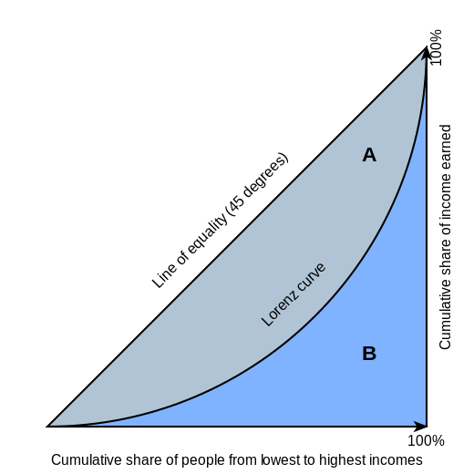
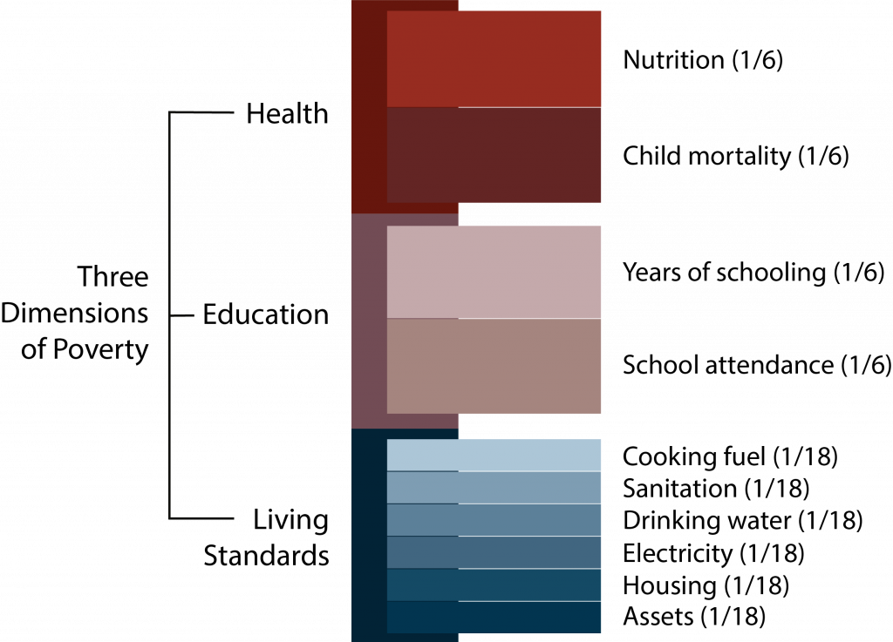

A Comparison of Common Indices Used to Measure Poverty and Inequality
Introduction
As an emerging environmental data scientist, I am always looking to learn more about data visualizations that allow technical and non-technical groups to communicate effectively. In the pursuit of equality within countries, and globally, it is important to have a standardized way of comparing wealth disparities. The goal of this paper is to summarize some of the most commonly used indices for measuring poverty and inequalities for a non-technical audience while providing an accurate account of the benefits and drawbacks of each measurement. A description of some less commonly used indices that provide an alternative approach and opportunities for future work have been included as well.
Types of Poverty Indices
In many countries, the easiest and most commonly used indices of success and equality use income data as the only metric. This is partly because monetary data, including average household income and GDP per capita, is easy to collect and paints a picture of a country’s success without being fully transparent about the severity of inequalities. The problem with many of these commonly used poverty indices is that they aren’t always distribution sensitive, meaning incomes slightly below the poverty line are weighted equally compared to an income that is grossly below the poverty line. The benefit of using these indices that aren’t the most transparent about the income inequality is that the units on these indices are generally easy for the average person to interpret. The following poverty indices use income and population data to calculate an index that can be compared between smaller and larger groups regardless of currency.
Poverty Gap Index & Squared Poverty Gap Index
The poverty gap index provides as estimate of how far below the poverty line people within a population fall. This approach begins by defining the poverty line for each group of interest. Then a percentage of the poverty line is calculated by subtracting in individual’s income from the poverty line, and dividing by the poverty line. The final index value is found by taking the average of all the calculated percentages.
This approach has two main drawbacks, it’s not distribution sensitive and it does not incorporate information about people living above the poverty line. As a solution to the poverty gap index not being distribution sensitive, they squared poverty gap index was created. This approach squares the poverty line percentage so that larger percentages become larger and small percentages aren’t equally weighted. This reintroduces the issue that a squared percentage isn’t an intuitive unit for people to understand when making comparisons.
Poverty Severity Index
The poverty severity index is an alternative to the squared poverty gap index because the poverty severity index is a sum of the weighted income ratios. This approach begins similarly by setting a poverty line and calculating the ratio of the income to the poverty line. The poverty severity index is then calculated by taking the average of all the squared income ratios.
The poverty severity index has the benefit of being distribution sensitive, making it a useful tool for evaluating inequities within a population all living below the poverty line. However, this index also does not include information about people living above the poverty line.
Poverty Headcount Ratio
The poverty headcount ratio is the most simple index used when looking at poverty within an area of interest, but it also includes the least amount of information about unequaly distributed incomes. The poverty headcount ratio is found by dividing the size of the population living in poverty by the size of the total population.
This is by far the simplest of the calculations done so far, which makes it easy for the average person to compare two ratios and have an intuitive understanding of the difference in values. This index also have the benefit of being the only poverty index that includes information about the people living above the poverty line. However, the poverty headcount ratio provides no information about how poor the people living in poverty are, or how rich the people living above the poverty line are.
Types of Inequality Indices
While poverty indices have the benefit of being much more intuitive, the indices that measure inequality are more complex. The inequality indices are therefore better at providing more information about the true inequality within a population.
Lorenz Curve
The Lorenz curve is one of the most commonly used data visualizations to describe income inequality within a population. The Lorenz curve shows what percentage of income is owned by each percentage of the population.
When describing the Lorenz Curve, a straight line connecting both ends of the curve represents equality within a population. However, typically Lorenz curves are curved, showing the unequal distribution of income within a population. The lorenz curve has the beenfit of being transparent, with easy-to-interpret axis, however it requires a more in-depth caluclation to create curves for each population. A visualization of the Lorenz curve can be seen below:

Gini Index
The Gini index was derived from the Lorenz curve and is calculated as the ratio between the area under each of the curves shown in the graph above. The sum of areas A and B in the above graph represent total equality as an area. The area in between the line of equality and the Lorenz curve represents the present inequality as an area. The Gini index takes the ratio of area A and the sum of areas A and B to create a ratio of inequality.
Theil Index
The Theil index is a measure of inequality that uses entropy as a metric. Since entropy isn’t a very intuitive metric the formula for calculating the Theil index requires calculating the ratio between the individual’s income and the average income to create an income ratio. This ratio is then multiplied by the natural log of itself and averaged for all individuals within a population.
The Theil index essentially measures the “entropic distance” from a fully equal economy, however intuitively understanding the Theil index takes extensive study.
Modern Welfare Indices
Given the descriptions of various methods for standardizing poverty and inequality, it might be obvious that there is a need for an index that is capable of capturing the complexities of inequity without requiring every individual to be well-versed in mathematics.
As researchers have continued to find ways to solve this dilemma, there are two main front runners for a solutions to the balance of prior poverty and inequality indices: The Welfare, Poverty, and Inequality Index, and the Multidimensional Poverty Index.
The Welfare, Poverty, and Inequality Index
Kraay et al., a Development Economic Group at the World Bank, have found a way to create an index that is distribution sensitive while also having intuitive units. This index is calculated by averaging the ratio between a fixed income threshold and an individual’s income. This is slightly different from the other indices discussed in this paper because the threshold income is in the numerator of the income ratio, and the threshold income doesn’t have to be the poverty line. The threshold income can take on a variety of values including a simple linear equation. The Welfare, Poverty, and Inequality Index describes the “the average factor by which individual incomes need to be multiplied to reach the reference level of income” (Kraay et at., 2023). This is a great alternative for economists, social scientists, and policy makers who hope to provide a similar index to what is being common used in literature, but wish to improve the transparency of the inequality within a population.
The Multi-dimensional Poverty Index
The United Nations Development Programme along with the Oxford Poverty and Human Development Initiative have developed a multidimensional poverty index that allows for factors other than just poverty to be included in the measurement of inequality. The multi-dimensional poverty index looks at three main factors when determining poverty: Access to healthcare, access to education, and the standard of living for each population of interest. These key factors are then broken up into subcategories that can be scored based on a percentage. These percentages are then weighted and summed to output a poverty index.

Conclusion
When studying economics, poverty,or inequality, there are many options available to visualize the data, and each of these options provides different benefits and drawbacks. While poverty indices are a great way to gain insight into how much a population is living below the poverty line, the most common options either lack the complexity to be transparent or have non-intuitive units. Inequality indices are much better at capturing the true complexity of inequality within a population, however not all equality indices require equal understanding to interpret. There are also new indices becoming available as the push for transparency in the inequalities existing in the world becomes unavoidable. It is imperative that biases and personal interests are manged when choosing an index for data visualization, and when analyzing the data visualizations of others.
Future Work
Future work for this paper would involve creating a more extensive list of available indices, which would allow for more opportunities of comparison. Another worthwhile addition to this paper would be the inclusion of more indices that estimate inequality and poverty factors, similar to the multidimesional poverty index.
Citations
Bureau, US Census. “Theil Index.” Census.Gov, 8 Oct. 2021, www.census.gov/topics/income-poverty/income-inequality/about/metrics/theil-index.html#:~:text=The%20Theil%20index%20is%20a,everyone%20having%20the%20same%20income.
Cowell, Frank A., and Emmanuel Flachaire. “Inequality Measurement and the Rich: Why ... - Wiley Online Library.” Wiley Online Library, The review of income and wealth, 6 Mar. 2023, onlinelibrary.wiley.com/doi/10.1111/roiw.12638.
Kraay, Aart, Christoph Lakner, Berk Özler, Benoit Decerf, Dean Jolliffe, Olivier Sterck, and Nishant Yonzan. “Reproducibility Package for a New Distribution Sensitive Index for Measuring Welfare, Poverty, and Inequality.” Reproducible Research Repository, The World Bank, 20 July 2023, reproducibility.worldbank.org/index.php/catalog/7#project_desc_container1687292771537.
Kraay, Aart, Christoph Lakner, Berk Özler, Benoit Decerf, Dean Jolliffe, Olivier Sterck, and Nishant Yonzan. “Can We Have a Welfare Index That Is Easy to Understand but Also Distribution Sensitive?” World Bank Blogs, Development Impact, 1 June 2023, blogs.worldbank.org/impactevaluations/can-we-have-welfare-index-easy-understand-also-distribution-sensitive.
Park, Joongyang, et al. “Measuring Income Inequality Based on Unequally Distributed Income - Journal of Economic Interaction and Coordination.” SpringerLink, Journal of Economic Interaction and Coordination, 13 Aug. 2020, link.springer.com/article/10.1007/s11403-020-00295-1#:~:text=Since%20most%20income%20inequality%20indexes,Theil%20index%20are%20not%20computable.
UNDP (United Nations Development Programme). 2023. 2023 Global Multidimensional Poverty Index (MPI): Unstacking global poverty: Data for high impact action. New York. https://hdr.undp.org/content/2023-global-multidimensional-poverty-index-mpi#/indicies/MPI
United Nations Economic and Social Commission for Western Asia. “Squared Poverty Gap Index.” Squared Poverty Gap Index, 8 Nov. 2015, archive.unescwa.org/squared-poverty-gap-index#:~:text=Squared%20poverty%20gap%20index%2C%20also,falls%20below%20the%20poverty%20line.
World Bank. 2023. “Poverty and Inequality Platform Methodology Handbook.” Edition 2023-09. Available at https://datanalytics.worldbank.org/PIP-Methodology/.
Citation
@online{childers2023,
author = {Childers, Heather},
title = {A {Comparison} of {Common} {Indices} {Used} to {Measure}
{Poverty} and {Inequality}},
date = {2023-12-10},
url = {hmchilders.github.io/blogs/2023-11-06},
langid = {en}
}